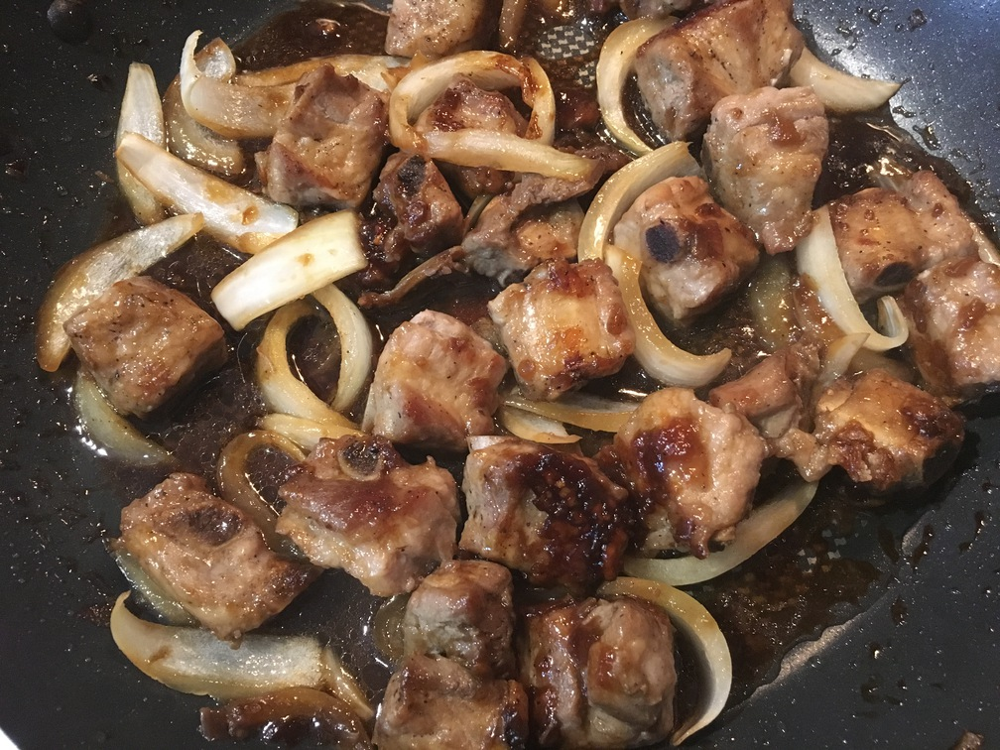

| Other | Meat | Veggie | Fruit |
|---|---|---|---|
| cornstarch | pork belly | green onions | |
| pepper | pork rib tips | onion | |
| salt | shallot | ||
| soy sauce | |||
| sugar | |||
| vinegar |
| instructions |
|---|
| Cut pork rib tips (suon) into squares or pork belly into slices |
| Marinate meat with salt, pepper, and minced shallots |
| Fry meat on medium high heat until brown |
| Once meat is mostly cooked, turn heat down to medium low |
| Add ratio of 3 sugar : 3 soy sauce, some vinegar and adjust to taste with water |
| Sprinkle in a little bit of cornstarch |
| Turn heat down to low |
| Add in sliced yellow onion and chopped green onions |
| Cover and wait a few minutes to fully cook |